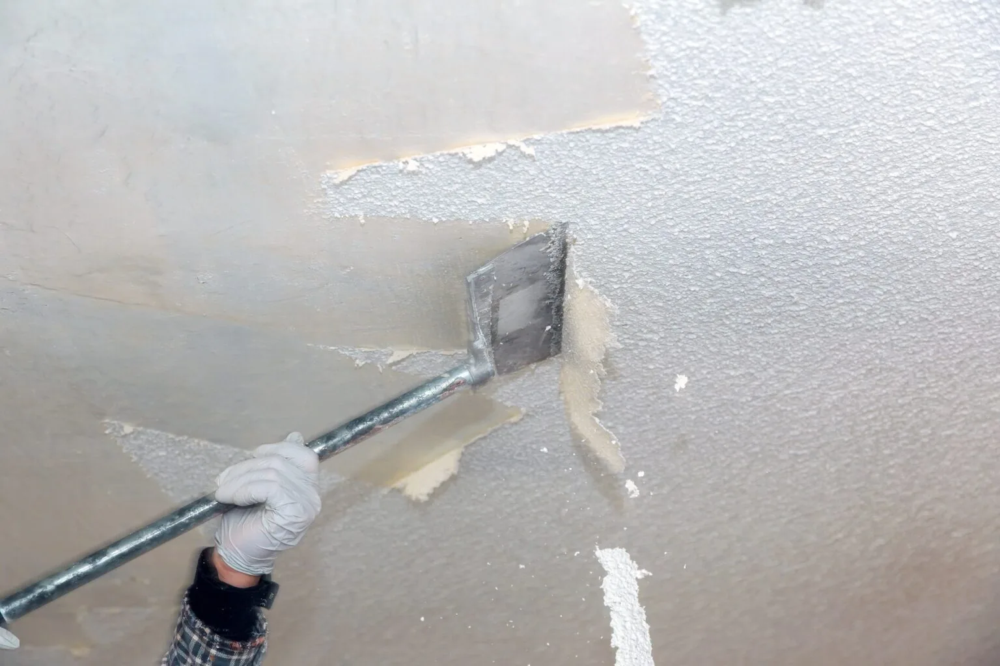

Popcorn ceiling removal
Controlled wet or dry removal selected for the existing coating, substrate and room conditions.
Replace dated popcorn ceiling texture with a brighter, smoother finish—through a controlled process built around protection, surface repair and clean final lines.

Professional popcorn removal is more than taking texture down. The quality shows in containment, drywall preparation, skim coating and the final surface under natural light. We also handle acoustic and stipple textured ceilings — the same sprayed-on texture under a different name, common in Dallas homes built from the 1960s through the 1980s.
Controlled wet or dry removal selected for the existing coating, substrate and room conditions.
Removal of acoustic or stippled texture from bedrooms, living rooms, hallways and whole-house ceilings.
Correction of tape lines, fastener marks, surface damage and uneven areas revealed after scraping.
Smooth Level 4/5-style finishes, subtle orange peel or knockdown texture based on the room and lighting.
Stain-blocking or drywall primer followed by a uniform ceiling coating for clean color and sheen.
Coordinated wall texture removal or patch blending where ceiling work meets textured surfaces.
Every step is handled by popcorn ceiling removal specialists — not general painters splitting time across a dozen trades.
A good result depends on what happens before and after scraping. This sequence protects the room and creates a ceiling that looks intentional—not merely de-textured.
Review the coating, paint layers, water staining, drywall condition and access. Painted texture and heavy repairs can change the method and schedule.
Remove movable items, isolate the work area, cover floors and walls, and protect fans, lights, vents and built-ins.
Use a controlled approach to lift the texture while limiting damage to the drywall paper and reducing airborne debris.
Address joints, dents and fasteners; apply joint compound where needed; then sand to the level required by the selected finish.
Prime the prepared surface, apply the selected ceiling paint or texture, inspect it in the room’s light and complete cleanup.
When Dallas homeowners research popcorn ceiling removal cost per square foot, published cost guides report typical ranges near $1 to $6 per square foot — but square footage is only the starting point. Finish level, ceiling height, paint, access and hidden drywall conditions often matter just as much. Want numbers for your rooms? Request a free popcorn ceiling removal estimate in Dallas.
Larger areas and tall or vaulted ceilings require more protection, access equipment and labor.
Paint can prevent moisture from loosening the texture, increasing the work needed to remove it.
Old repairs, torn paper, visible seams and cracks become part of the refinishing scope.
A high-smooth finish typically demands more skim coating and sanding than applying a new light texture.
Suspect material requires testing and, if confirmed, a separate compliant abatement plan.
The best replacement for popcorn texture depends on architecture, lighting and how much surface correction the existing drywall requires.
A crisp, modern surface that reflects light evenly and creates a clean visual plane.
A subtle spray texture that softens minor variation without the heavy profile of popcorn.
A hand-finished pattern with broader visual movement and a more crafted appearance.
A prepared ceiling handed off after removal, repair and sanding for a separate painting phase.
Dallas-area homes vary in age, ceiling height and prior paint history. A site visit should confirm what is on the ceiling, what finish sits underneath and what the room needs afterward. Request a free popcorn ceiling removal estimate for your city.
Use these answers to compare professional removal scopes and understand what should be decided before the first room is covered. Still deciding? Ask us directly — every estimate request gets a reply within one business day.
Usually, but paint can make the texture harder to soften and scrape. The contractor may need a different removal method and more surface repair. A small test area helps define the right approach.
If age or material history makes asbestos possible, have it tested before scraping, sanding or drilling. Do not rely on appearance alone. Confirm testing and any required abatement separately from ordinary texture removal.
Timing depends on the number of rooms, ceiling height, whether the texture is painted, drying time between compound coats and the finish selected. Whole-home projects should be phased room by room in a written schedule.
Ask whether the scope includes drywall repair, skim coating, sanding, primer, paint, fixture handling, debris removal and final cleanup. “Removal only” and a complete finished ceiling are very different scopes.
Smooth ceilings look crisp and modern but reveal surface imperfections. A light texture can disguise small variations and may require less correction. The right choice depends on the existing drywall and the room’s lighting.
Often yes, if rooms can be isolated and the project is phased. Discuss access, dust control, furniture movement, HVAC protection, drying time and daily cleanup before work begins.
It should define rooms or square footage, ceiling height, prep and containment, removal method, repair level, finish, primer and paint, testing assumptions, exclusions, cleanup and schedule.
Published national cost guides report roughly $1 to $6 per square foot for professional popcorn ceiling removal — about $3,000 to $9,000 for a 1,500 sq ft home depending on scope. Painted texture, high or vaulted ceilings, asbestos testing, and the finish level (a Level 5 smooth finish costs more than a light knockdown texture) all move the number. Ask for the quote broken down per room or per square foot, not a single lump sum.
Usually yes. Paint seals the texture so water can't soften it, which means slower scraping, more drywall damage, and extra skim coating afterward. Mention any paint history when you request an estimate — a contractor may want to test a small area first to price it accurately.
Independent labs typically charge about $50 to $150 per sample, and most contractors recommend testing two or three samples from different rooms. Never scrape, sand, or drill a pre-1980s popcorn ceiling before the results come back.
Some do. Asbestos was common in sprayed acoustic ceiling texture until the late 1970s, when the 1978 federal ban took effect — though existing stock kept being installed into the early 1980s. If your Dallas home was built before the mid-1980s, get the texture tested before disturbing it. Appearance alone can't confirm or rule asbestos out.
DIY popcorn ceiling removal is possible — wet-scraping with a garden sprayer and a wide drywall knife is the standard method — but homeowners consistently report the scraping is the easy part and the skim coating, sanding, and finishing afterward is where DIY results suffer. Professionals also bring dust containment, asbestos testing protocols, and a spray-grade finish most DIY jobs can't match.
Yes — overlaying 1/4-inch or 3/8-inch drywall is a legitimate alternative to popcorn ceiling removal, especially when asbestos may be present, since encapsulation avoids disturbing the texture. It lowers ceiling height slightly and means extending electrical boxes and trim, so compare both options in writing before deciding.
It can be without proper containment. A professional crew seals the room in plastic sheeting, protects floors and HVAC vents, and uses dust-conscious scraping and sanding with HEPA-filtered cleanup. Ask any Dallas contractor how they control dust before you hire — it's one of the clearest quality signals.
It usually helps marketability more than appraised value. Dated popcorn texture is one of the first things buyers — and listing photos — flag in Dallas homes, and a smooth modern ceiling removes a common objection. It's best timed alongside a broader interior refresh.
Largely yes. Acoustic, stipple, and popcorn all describe the same family of sprayed-on textured ceilings popular from the 1960s through the 1980s. Removal, asbestos testing, and finishing work the same regardless of which name appears on your home's paperwork.
Not always — and that's where quotes diverge. Some bids cover scrape-only and leave you with raw, damaged drywall; a complete job includes drywall repair, skim coating to a Level 4 or Level 5 smooth finish, sanding, primer, and paint. Ask for the finish level in writing before you compare prices.
Use the project brief above to describe your rooms, ceiling height, visible condition and desired finish consistently when comparing Dallas popcorn ceiling removal professionals.
Get my free estimate